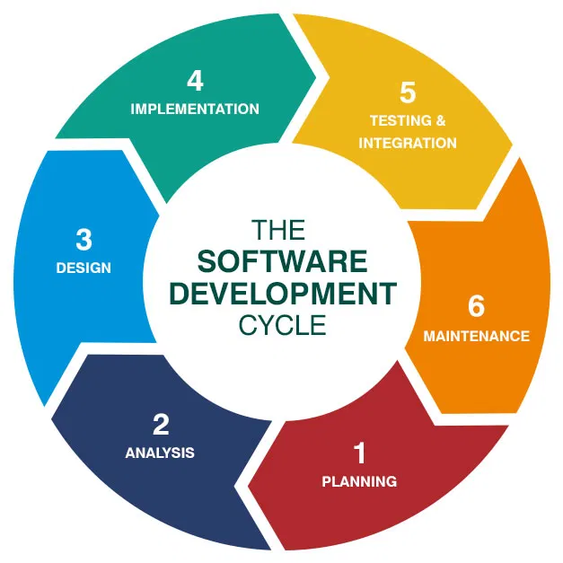
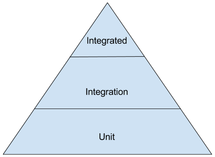
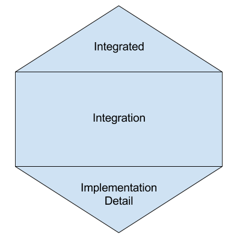
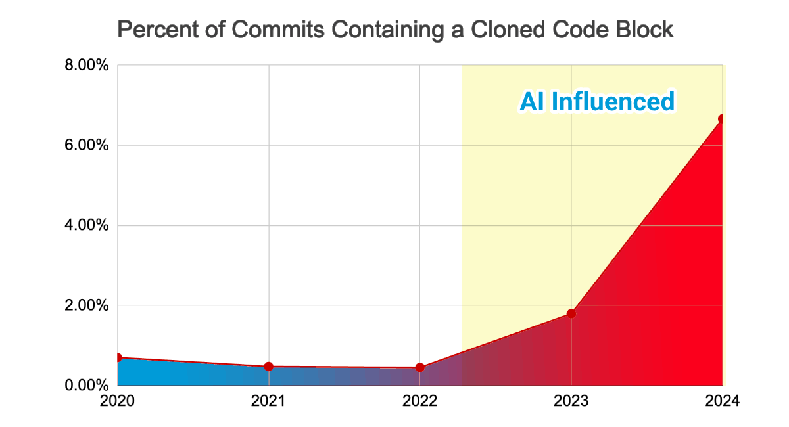
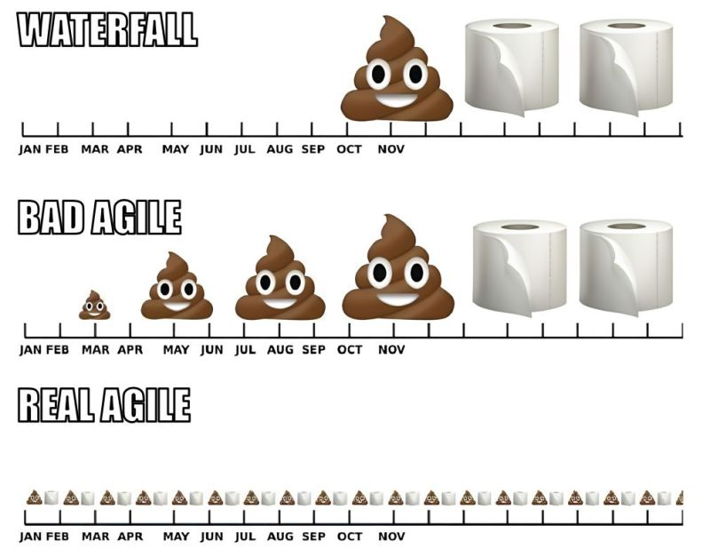

Be or not to be
a pyramid of testing
"Quality is never an accident; it is always the result of intelligent effort."
- John Ruskin
“Program testing can be used to show the presence of bugs, but never to show their absence!”
- Edsger W. Dijkstra
“Discovering the unexpected is more important than confirming the known.”
- George E. P. Box
"Quality is not an act, it is a habit."
- Aristotle
“If you're not failing, you're not trying hard enough.”
- Martin Fowler
Agenda
- Testing in the SLDC
- What is Testing value?
- Shapes of pyramids of testing
- Types of software testing
- Testing and Generative AI
- Live code demo
- References
- Q&A
Testing in the SLDC
Testing in the SLDC
Questions for the audience:
What is the percentage of your time invested in testing in a Sprint?
Testing in the SLDC
Approximately 40-50% of the total software development project lifecycle cost involves testing, which is in line with industry software cost models.
Tim Crumbley (NASA)What is Testing value?
The value of testing really boils down to:
- Bugs
- Runtime issues
- Quality/Risk Assessment
- Requirement validation
Shapes of pyramids of testing
 Source: https://engineering.atspotify.com/2018/01/testing-of-microservices/Shapes of pyramids of testing
Shapes of pyramids of testing
 Source: https://engineering.atspotify.com/2018/01/testing-of-microservices/Shapes of pyramids of testing
- Unit: Test 1 thing, alone
- Integration: Test a few things, together
- End-to-end (E2E): Test that everything works together (run the app)
Types of software testing
Unit testing
 Source: https://martinfowler.com/bliki/UnitTest.html
Source: https://martinfowler.com/bliki/UnitTest.html
Types of software testing
Unit testing
Unit testing is a type of software testing where individual units or components of a software are tested. The purpose of unit testing is to validate that each unit of the software performs as expected.
Types of software testing
Concepts
- Mocks: Mocking is the practice of creating simulated versions of the objects in the code, and then using these mock objects to mimic the behavior of the real objects or services so that we can test parts of the code in isolation.
Types of software testing
Concepts
- Stubs: A stub is a test double that returns a configured response every time when an expected interaction happens between the system under test and a stub.
Types of software testing
Integration testing
 Source: https://katalon.com/resources-center/blog/integration-testing
Source: https://katalon.com/resources-center/blog/integration-testing
Types of software testing
Integration testing
Integration tests test the plumbing and choreography of the components.
- Uncle Bob Martin
Types of software testing
Integration testing
Integration testing is a type of software testing where the software is tested as a whole, to ensure that the different parts of the software work together as expected.
Types of software testing
Integration testing
Source: https://pragprog.com/titles/mockito/mockito-made-clear/Types of software testing
Integration testing
Questions for the audience:
When is better not not use Mocks and it is better to create an Integration test?
Types of software testing
Integration testing
| Service | Solution |
| HTTP | WireMock |
| Database | TestContainers |
| Broker | TestContainers |
Testing and Generative AI
 Source: https://martinfowler.com/articles/engineering-practices-llm.html
Source: https://martinfowler.com/articles/engineering-practices-llm.html
Testing and Generative AI
 Source: https://www.gitclear.com/ai_assistant_code_quality_2025_researchTesting and Generative AI
References